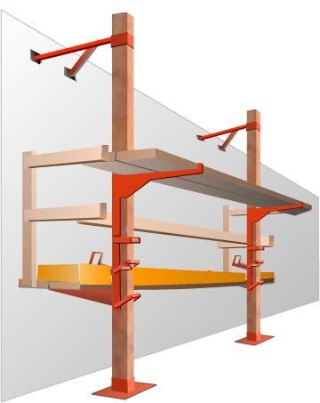

Pump jacks are a uniquely designed scaffold consisting of a platform supported by moveable brackets on vertical poles. The brackets are designed to be raised and lowered in a manner similar to an automobile jack. Pump jacks are appealing for certain applications because they are easily adjusted to variable heights, and are relatively inexpensive.
- Pump jack brackets, braces, and accessories must be fabricated from metal plates and angles.
- Each pump jack bracket must have two positive gripping mechanisms to prevent any failure or slippage.
- When guardrails are used for fall protection, a workbench may be used as the toprail only if it meets all requirements of paragraphs
- Work benches must not be used as scaffold platforms.
-
Poles must be secured to the structure by rigid triangular bracing, or equivalent, at the :
- Bottom
- Top
- Other points as necessary
- When bracing already installed has to be removed so the pump jack can pass, an additional brace must be installed approximately 4 feet above the original brace before it is removed. The additional brace must be left in place until the pump jack has been moved and the original brace reinstalled.
-
When poles are made of wood, the pole lumber must be :
- Straight-grained
- Free of shakes
- Free of large loose or dead knots, and other defects that might impair strength.
- When wood poles of two continuous lengths are joined together, the seam must be parallel to the bracket.
- To develop full strength when two-by-fours are spliced to make a pole, mending plates must be installed at all splices.
- Wood poles may not exceed 30 feet in height
-
When 2 x 4s are spliced together to make a 4 x 4-inch wood pole, they must be:
- Spliced with 10 penny common nails no more than 12 inches center to center.
- Staggered uniformly from the opposite outside edges.
- Maximum intended load for pump jack scaffolds is 500 pounds, applied at the center of the platform span.
- Not more than two employees may be on a pump jack scaffold between any two supports at one time.